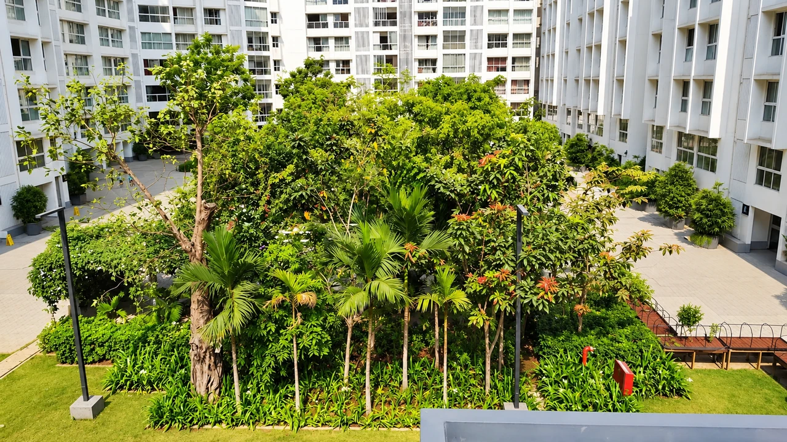
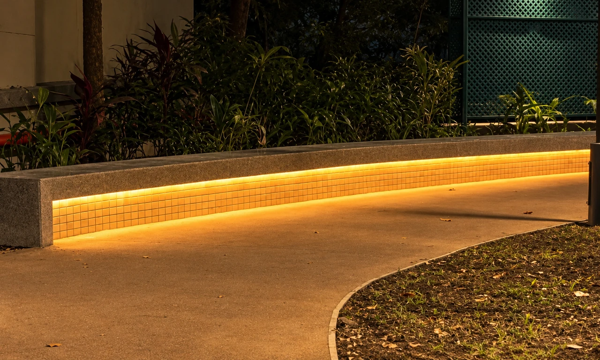

Godrej The Trees
Courtyards, stone-paved paths and planted gardens at Godrej Properties’ The Trees, including a beer garden with curved black granite seating and a reflecting pond.
View project
Expert guidance for healthy and sustainable landscapes.

Our horticulture consultancy helps clients make informed decisions about plants, plantation, gardens and landscape maintenance. We give practical guidance based on site conditions, plant requirements, maintenance needs and long-term landscape performance.
Our founder, Amit Walawalkar (M.Sc. Horticulture), has served as a consultant to Mumbai Metro Rail Corporation Limited for tree transplanting, to Samruddhi Mahamarg for tree plantation and to Mumbai Port Authority for garden development.
We understand project goals, site conditions, requirements and budget.
Soil, drainage, sunlight, vegetation and water availability are evaluated.
Clear advice on plants, irrigation, soil improvement and maintenance.
Technical guidance and quality monitoring during implementation.
Maintenance strategies so the landscape continues to perform.

Courtyards, stone-paved paths and planted gardens at Godrej Properties’ The Trees, including a beer garden with curved black granite seating and a reflecting pond.
View projectPlants and plantation solutions for diverse landscape requirements.
Learn more
Fabricated structures and allied works that complete outdoor spaces.
Learn more
End-to-end implementation of landscape and outdoor works with attention to quality and finish.
Learn more